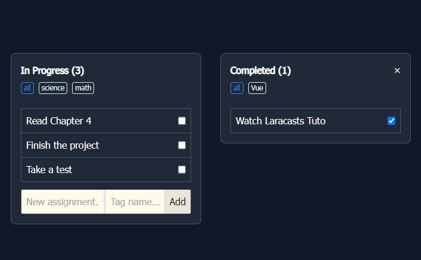
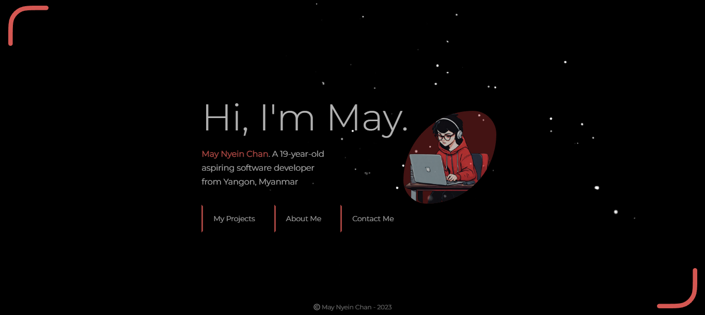

Let's take a look at some of my projects

"It's Dinner Time Project"
- Built in Scratch for the pset 0 of CS50 course
Your mission is simple: you're on the hunt for dinner, and dinner tonight is all about those birds. But there's a catch: you've got a limited amount of time to bag as many birds as you can.
See Project"Weather Project"
- Built in HTML, CSS, JavaScript for SheCodes Plus Final Project
A web app where you can search for current weather conditions and 3-day-weather-forecast for a city.
See Project

"To-do-list Project"
- Built in Vue as a practice project while learning Vue
A to-do-list app where you can add tasks and mark them as completed when done.
See Project"Portfolio Project"
- Built in HTML, CSS, JavaScript for SheCodes Responsive Final Project
A project where you can learn more about me by observing my learning journey, hobbies, and contact details.
See Project
